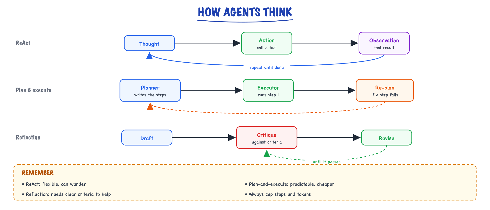
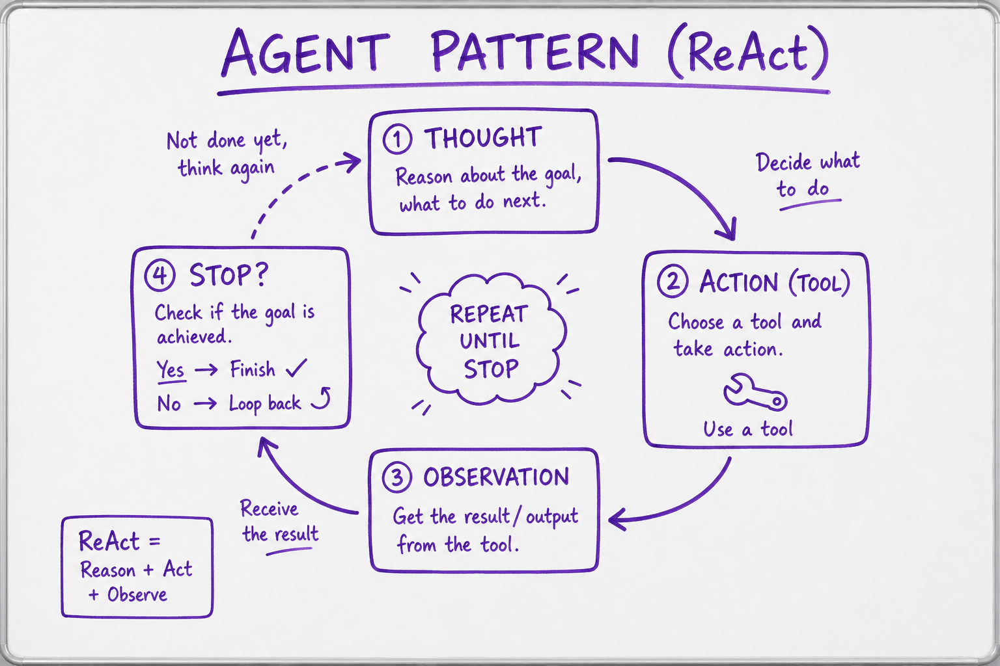

Reasoning patterns // Tools & agents
ReAct, plan-and-execute, reflection and the other ways agents think.
01 — At a glance

Three reasoning patterns side by side: ReAct interleaves thought and action, plan-and-execute separates planning from doing, reflection critiques and revises its own draft.

The ReAct loop: reason about the goal, act with a tool, observe the result, and repeat until the goal is met.
02 — New words
| Word | Meaning |
|---|---|
| Chain of thought (CoT) | Having the model write out intermediate steps before its final answer, instead of answering immediately. |
| Test-time compute | Computation spent while answering (more generated tokens, more samples, search) rather than during training. |
| Self-consistency | Sampling several independent reasoning chains for the same question and taking the most common final answer. |
| Reasoning model | A model trained (largely with reinforcement learning on checkable tasks) to produce a long internal reasoning phase before answering. |
| Thinking budget | A limit you set on how many tokens a reasoning model may spend thinking; those tokens are billed like output. |
| ReAct | "Reason + act": the model alternates a short reasoning step with a tool action, reads the observation, and repeats. |
| Plan-and-execute | One call writes a multi-step plan up front; the steps are then carried out, with a new plan only if something fails. |
| Reflection | The model (or a separate critic) reviews an attempt, writes a critique, and tries again with the critique in context. |
| Verifier | Anything that can check an answer: unit tests, a schema, a calculator, a database lookup, or (weaker) another model. |
| Tree of thoughts / search | Exploring several partial solutions at each step, scoring them, and expanding the most promising, instead of following one chain. |
| Faithfulness | Whether a written reasoning chain actually reflects how the model reached its answer. It is not guaranteed. |
| Orchestrator–workers | Manager decomposes a task, workers do pieces, manager synthesizes. |
| Voting / consensus | Run a task N times, take the majority (reliability). |
The lesson
03 — The question
A model generates one token at a time, and every token gets the same fixed amount of computation. Some questions need more than one token's worth of thought: several facts to combine, a rule with an exception, arithmetic. Reasoning patterns are the ways we give a model more computation, more information, or a second chance, and they range from one sentence in a prompt ("work through it step by step") to agent architectures with planners and critics.
The questions you will be asked:
- Why does chain of thought improve answers? What is actually going on?
- Explain ReAct, plan-and-execute and reflection. When would you pick each?
- What are reasoning models, and how do they change the way you prompt and build?
- What does each pattern cost, and how would you decide whether it is worth it?
The running example. A support agent must answer: "How much can order ORD-5521 be refunded?" The facts, which the agent may or may not have in its context:
- The order cost $240, is an electronics item, was opened, and was delivered 41 days ago.
- The customer is a Gold member.
- Policy: the return window is 30 days, extended to 60 for Gold members; opened electronics carry a 15% restocking fee.
The right answer is $204: eligible (41 ≤ 60 because of Gold), minus 15% of $240. The tempting wrong answers are "not eligible" (applying the 30-day window), $240 (forgetting the fee) and $216 (a wrong fee). We will reach the right answer with each pattern and count what it costs.
04 — Step 1: why answering directly fails
Ask the model "How much can ORD-5521 be refunded? Answer with a number only," with all the facts in the prompt. To answer correctly, its very first output token must already encode the result of three dependent sub-problems: which window applies (needs the tier), whether 41 days is inside it, and what 85% of 240 is. A transformer computes each token with a fixed stack of layers (see transformers), so all of that has to happen within one forward pass, in parallel, with no chance to write anything down.
That is often too much for one pass. The model falls back on the most familiar pattern in the input: "30-day return window" appears in the policy, 41 is greater than 30, so "not eligible" is a fluent and wrong answer. The failure is not missing knowledge; every fact is in the prompt. It is missing computation.
05 — Step 2: chain of thought, tokens as scratch paper
Now ask the same question with "Work through the policy step by step, then give the amount." The model writes something like:
Customer tier is Gold, so the return window is 60 days. Delivered 41 days ago: 41 <= 60, so the order is eligible. Item is opened electronics: restocking fee 15%. Refund = 240 x (1 - 0.15) = 204. Answer: $204
Why this helps, mechanically:
- More serial computation. Each written token is another full forward pass. Five lines of reasoning are dozens of passes, each able to build on the last.
- Working memory. Each intermediate result ("window is 60 days") is now in the context, where every later token can attend to it. The model no longer has to hold it implicitly.
- Decomposition. Each line is a sub-problem the model handles well on its own (a lookup, a comparison, a multiplication), even if the composed problem is hard in one step.
Two forms: zero-shot CoT just asks for step-by-step reasoning; few-shot CoT includes worked examples whose reasoning shows the structure you want (check tier, check window, apply fee). Few-shot is more controllable for a fixed task.
The costs are real. The reasoning is output, and output tokens are the slow and expensive ones: a 60-token answer that becomes 300 tokens of reasoning takes five times as long to generate and costs five times as much in output. For a product, separate the reasoning from what the user sees: ask for reasoning in one field and the answer in another (see structured output), and show only the answer.
The chain is not a faithful explanation. Models sometimes write a plausible chain that is not how they actually reached the answer, or reach the right answer despite a wrong step. Use the chain as a performance aid and a debugging hint, not as an audit record of why a decision was made. For audits, log the inputs, tool results and policy checks your code ran.
06 — Step 3: self-consistency, voting over several chains
With sampling at a non-zero temperature (see decoding), each chain is a random draw. Suppose, for illustration, one CoT chain on the refund question yields $204 with probability 0.6, $240 with 0.2, "not eligible" (0) with 0.15 and $216 with 0.05. Sample \(n\) chains and return the most common final answer. Simulating that vote (200,000 trials, ties broken at random):
| Chains \(n\) | 1 | 3 | 5 | 9 | 15 |
|---|---|---|---|---|---|
| P(vote = $204) | 0.60 | 0.70 | 0.79 | 0.90 | 0.96 |
Voting works because correct chains tend to agree on one answer while wrong chains scatter across several. Two limits matter:
- It amplifies the most likely answer, right or wrong. If the model's single most likely answer is wrong (say $240 at 0.6 and $204 at 0.4, two answers only), voting makes things worse: 0.40 with one chain, about 0.32 with five, 0.21 with fifteen. More samples cannot fix a systematic misconception.
- It needs answers that can be compared. Numbers, labels and short answers vote easily. Free-form essays do not; for those you need a judge or a verifier to pick among samples.
And it costs \(n\) times the tokens. The samples can run in parallel, so latency barely grows, but the bill does. Use it where a wrong answer is expensive and the answer is short.
07 — Step 4: reasoning models, chain of thought built in
Reasoning models move chain of thought from the prompt into training. They are trained, largely with reinforcement learning on tasks whose answers can be checked automatically (maths, code with tests, puzzles), to produce a long internal reasoning phase before the visible answer. The training rewards correct final answers, so the model learns reasoning behaviours that pay off: breaking problems down, checking intermediate results, backtracking when a path fails. See RLHF and DPO for the training side.
What changes for an engineer:
- Do not prompt them to "think step by step". They already do; explicit step-by-step instructions can conflict with their trained behaviour. Give them the goal, the constraints, the facts and the output format.
- You pay for thinking tokens. They are billed as output (and are often hidden or summarised in the response). A call that thinks for 4,000 tokens at an illustrative $15 per million output tokens costs $0.06 before it writes a word, and at an illustrative 100 tokens per second takes 40 seconds.
- You control the effort. Most APIs expose a thinking budget or an effort level. Spend it on hard, high-value steps (planning, diagnosing a failure, a tricky policy decision), not on routine tool calls.
- Self-consistency and long CoT prompts matter less, because the model already explores and checks internally. They still benefit from a verifier when one exists.
For the refund question, a reasoning model with a modest budget will usually get $204 without any special prompt. The interesting question becomes whether the question deserves a reasoning model at all, or whether code should compute the policy (Step 9).
08 — Step 5: ReAct, reasoning interleaved with actions
So far all the facts were in the prompt. In a real agent they are not: the tier is in the CRM, the delivery date and category are in the order system. Chain of thought alone would make the model guess them, fluently. ReAct interleaves short reasoning with tool actions so that each step is grounded in an observation:
Thought: I need the order details: date, total, category, opened.
Action: get_order("ORD-5521")
Observation: total 240, electronics, opened, delivered 41 days ago, customer C-77
Thought: The window depends on the customer's tier.
Action: get_customer("C-77")
Observation: tier gold
Thought: Gold window is 60 days; 41 <= 60, eligible. Opened electronics: 15% fee.
240 x 0.85 = 204.
Answer: $204
Each thought decides the next action using what was just observed: the agent did not know it needed the customer's tier until the order told it who the customer was. That adaptivity is ReAct's strength, and it is why the tool-calling loop in the agent loop is essentially ReAct. Modern native tool calling has absorbed the format: the "thought" is the text the model writes before a tool-use block (or its hidden thinking), the "action" is the tool call, and the "observation" is the tool result.
The costs: every step is a call to the main model with the full, growing context; with the illustrative cost model below, a 7-step ReAct run costs about $0.083. And because each step looks only one move ahead, ReAct can wander: re-fetching things, chasing a side detail, or looping.
09 — Step 6: plan-and-execute, think once then do
Plan-and-execute separates the two jobs. One call to a strong model writes the whole plan; execution follows it, often with code or a smaller model; the planner is called again only if a step fails or produces something unexpected.
planner (strong model, once): 1. get_order(ORD-5521) 2. get_customer(<customer id from step 1>) 3. compute_refund(order, customer, policy) executor (code or small model): runs 1, 2, 3 on failure: planner again, with the evidence so far
Cost, with illustrative prices of $3/$15 per million input/output tokens for the strong model and $0.25/$1.25 for a small one, for a task of six steps:
| Pattern | Calls | Illustrative cost |
|---|---|---|
| ReAct, strong model every step | 7 strong calls; context grows from 2,000 by 400 tokens per step, 150 output each | $0.083 |
| Plan-and-execute | 1 strong plan (2,000 in, 300 out) + 6 small executor calls (1,000 in, 100 out) + 1 strong synthesis (3,000 in, 300 out) | $0.026 |
About a third of the cost, and often faster, because independent steps in a plan can run in parallel. The price is adaptivity. A plan written before any observation can be wrong: in our example the planner cannot know the customer id until the order is fetched. Good plans express such dependencies ("customer id from step 1"); when they do not, the step fails and the planner must be called again with the evidence. If replanning happens on most runs, the task is too dynamic for up-front planning, and ReAct (or a hybrid: plan, then ReAct within each step) is the better fit.
10 — Step 7: reflection, and why the verifier decides everything
Reflection gives the model a second attempt informed by a critique: draft, critique, revise. Its value depends almost entirely on how good the critique is. Model it with the refund question: suppose a first attempt is right with probability 0.6, and a revision after a critique is right with probability 0.6 too.
- Self-critique without new information: the same model reviews its answer. Say it catches a wrong answer half the time (\(d = 0.5\)) and wrongly rejects a right answer 10% of the time (\(f = 0.1\)). Final accuracy \(= 0.6\,(0.9 + 0.1 \times 0.6) + 0.4\,(0.5 \times 0.6) = 0.696\): from 60% to about 70%, for roughly double the cost.
- An external verifier: code recomputes the policy, a unit test runs, a database confirms a fact. It catches every wrong answer and never rejects a right one: \(0.6 + 0.4 \times 0.6 = 0.84\). With up to two retries, \(1 - 0.4^3 = 0.936\).
The lesson generalises: reflection is powerful when the critique carries new information (a failing test's output, an error message, a check against the source) and weak when it is the same model rereading its own work, which tends to share the blind spot that caused the error. This is why reflection works so well for code (run the tests, feed back the failures) and modestly for open-ended writing. Cap the rounds (two or three), because each round re-sends the whole attempt and critique.
11 — Step 8: search over reasoning paths
Self-consistency samples whole chains independently. Tree of thoughts and related search methods branch at intermediate steps: generate several candidate next steps, score them (with the model or a verifier), expand the best, and backtrack from dead ends. It suits problems where early choices constrain later ones and partial solutions can be judged: puzzles, multi-step planning, some proofs.
Cost grows fast. Branching 3 ways for 3 levels is \(3 + 9 + 27 = 39\) node expansions, each with an evaluation, versus 3 steps for a single chain. Keeping only the best 2 nodes per level (a beam) brings it to \(3 + 6 + 6 = 15\). Best-of-\(n\) with a verifier is the simplest form: generate \(n\) complete answers and return one that passes the check, which is exactly pass@k from the agent loop, and cheap to implement when a verifier exists. Reasoning models learn some of this exploring and backtracking inside a single long chain, which is one reason explicit tree search is uncommon in production agents.
12 — Step 9: the cheapest reasoning is code
Look again at the refund question. Of its three sub-problems, two (is 41 ≤ 60? what is 85% of 240?) are deterministic and one (which rule applies?) is a lookup. None needs a language model's judgement. A production design lets the model do what only it can do (understand "can I get my money back for the lamp?", choose which order, explain the result) and gives the policy to code: a compute_refund(order_id) tool that returns $204 with the rule it applied. That tool is right every time, costs nothing, and its reasoning is auditable.
This is the same principle as in what an agent is: move decisions that do not need judgement out of the model. Reasoning patterns are for the parts that genuinely do: ambiguous requests, diagnosis, planning in open-ended environments, synthesis across sources.
13 — Choosing a pattern
| Situation | Pattern | Why |
|---|---|---|
| Rule-based computation (policies, prices, dates) | Code as a tool | Exact, free, auditable |
| A multi-step question with all facts in context | CoT, or a reasoning model at low effort | Needs computation, not information |
| Short answer, high cost of error, no verifier | Self-consistency (5 to 9 samples) | Voting suppresses scattered errors; parallel, so little added latency |
| Facts must be fetched and the next step depends on what is found | ReAct (the default tool loop) | Adapts to each observation |
| Long task with a predictable structure; cost matters | Plan-and-execute, replan on failure | Expensive thinking once; cheap execution; parallel steps |
| Output can be checked (tests, schema, recomputation) | Reflection with the verifier's feedback, or best-of-\(n\) | Each retry gets new information |
| Hard planning or diagnosis inside an agent | Reasoning model for that step only | Spend thinking budget where it pays |
Whatever you choose, measure it: run the task set with and without the pattern, several times each, and compare accuracy, cost and latency (see evals). Patterns that help on benchmarks often help less on a specific product, and every one of them multiplies tokens.
14 — In code: voting, reflection and plan-and-execute
The first block reproduces the numbers in Steps 3 and 7 (numpy only):
import numpy as np def vote_accuracy(dist, n, trials=200_000, seed=0): """dist[0] = P(right answer); dist[1:] = P(each distinct wrong answer). Plurality vote, random tie-break.""" rng = np.random.default_rng(seed) counts = rng.multinomial(n, dist, size=trials) top = counts.max(axis=1, keepdims=True) tied = (counts == top) return float((tied[:, 0] / tied.sum(axis=1)).mean()) # chance the tie-break picks the right one refund = [0.6, 0.2, 0.15, 0.05] # $204 (right), $240, "not eligible", $216 print("refund vote:", [round(vote_accuracy(refund, n), 2) for n in (1, 3, 5, 9, 15)]) print("wrong answer most likely:", [round(vote_accuracy([0.4, 0.6], n), 2) for n in (1, 5, 15)]) def after_reflection(p, detect, false_reject, p_revise): """One critique round: right answers survive unless falsely rejected; wrong ones are caught with prob detect.""" return p * ((1 - false_reject) + false_reject * p_revise) + (1 - p) * detect * p_revise print("self-critique:", round(after_reflection(0.6, 0.5, 0.1, 0.6), 3)) print("external verifier:", round(after_reflection(0.6, 1.0, 0.0, 0.6), 3))
It prints [0.6, 0.7, 0.79, 0.9, 0.96] for the refund vote, [0.4, 0.32, 0.21] when the wrong answer is most likely, then 0.696 and 0.84 for the two kinds of reflection.
The second is a plan-and-execute skeleton with replanning. plan() stands in for one strong-model call; the first plan guesses the customer lookup before it has the id, the step fails, and the planner is called again with the evidence:
DB = {"customer": {"C-77": {"tier": "gold"}},
"order": {"ORD-5521": {"customer": "C-77", "total": 240.0, "delivered_day": 0,
"category": "electronics", "opened": True}}}
POLICY = {"window_days": {"standard": 30, "gold": 60}, "restock_fee": {"electronics": 0.15}}
TODAY = 41
def plan(goal, evidence): # strong-model call in a real system
if "order" not in evidence:
return [("get_order", "ORD-5521"), ("get_customer", None), ("compute_refund", None)]
return [("get_customer", evidence["order"]["customer"]), ("compute_refund", None)]
def execute(step, arg, evidence): # code / cheap model; returns (ok, value)
if step == "get_order":
evidence["order"] = DB["order"][arg]; return True, evidence["order"]
if step == "get_customer":
if arg is None: # the first plan guessed; it lacked the id
return False, "customer id unknown: read it from the order"
evidence["customer"] = DB["customer"][arg]; return True, evidence["customer"]
if step == "compute_refund": # policy in code: exact and auditable
o, c = evidence["order"], evidence["customer"]
age = TODAY - o["delivered_day"]
if age > POLICY["window_days"][c["tier"]]:
return True, 0.0
fee = POLICY["restock_fee"].get(o["category"], 0) if o["opened"] else 0
return True, round(o["total"] * (1 - fee), 2)
def plan_and_execute(goal, max_replans=2):
evidence, steps = {}, plan(goal, {})
replans = 0
while steps:
step, arg = steps.pop(0)
ok, value = execute(step, arg, evidence)
print(f"{step:15s} {'ok ' if ok else 'ERR'} {value}")
if not ok:
if replans == max_replans:
return "escalate: could not complete plan"
replans += 1
steps = plan(goal, evidence) # replan with what we know now
return value
print("refund:", plan_and_execute("How much can ORD-5521 be refunded?"))
The trace shows get_order ok, get_customer ERR, then after replanning get_customer ok {'tier': 'gold'}, compute_refund ok 204.0, and refund: 204.0. Note that the policy arithmetic lives in execute, in code, as Step 9 recommends.
More detail
15 — How agents think: reasoning patterns
The loop is the skeleton; these patterns are how good agents use it. Mix and match.
ReAct (Reason + Act)
Interleave a "thought" and a tool "action" each step: think → act → observe → think… The default tool-using pattern.
Reflection / self-critique
The agent (or a separate critic) reviews its own output and revises. Cheap, powerful reliability boost — the basis of "evaluator-optimizer."
Plan-and-execute
Make a full plan first, then execute steps (re-planning when reality diverges). Fewer wasted steps on long tasks than pure ReAct.
Tree-of-Thoughts / search
Explore multiple reasoning branches and pick the best. For hard search/optimization problems — expensive, use sparingly.
16 — The four agentic patterns, mechanically
1. ReAct — reason, act, observe, repeat
Mechanism. Every step, the model emits a short natural-language thought ("the fixture file probably sets this value — let me read it") followed by an action (a tool call); the observation feeds the next thought. With native tool-use APIs you don't implement much — an earlier topic's loop is ReAct, provided you let the model think. The one implementation detail that matters:
SYSTEM = """Solve the task using the tools. Before EACH tool call, state in one or two sentences: (1) what you learned from the last result, (2) why this next call. Stop and answer when you have enough evidence.""" # ...then the standard loop from an earlier topic. The 'thoughts' # arrive as text blocks alongside tool_use blocks — keep them in history # (append resp.content whole); they are the model's working memory.
When it pays. Tool-heavy tasks with short horizons (≤ ~10 steps): lookups, diagnostics, data questions. The explicit thoughts measurably reduce flailing (fewer redundant calls) and give you a debuggable narrative in the trace for free.
Failure mode. Myopia. ReAct decides one step at a time with no global picture, so on long tasks it wanders: re-reads files it already saw, oscillates between two approaches, forgets the goal's second half. If your traces show the same tool called with near-identical inputs at steps 4 and 11, you've outgrown pure ReAct — add a plan.
2. Reflection / self-critique — draft, critique, revise
Mechanism. Generate an answer, then ask a model (same or different) to critique it against explicit criteria, then revise using the critique. The critical trick: critiquing is easier than generating — a model that writes a buggy function will often spot the bug when asked to review it, because reviewing is a different task with the solution already on the table.
draft = llm(f"Write a SQL migration for: {spec}") critique = llm(f"""Review this migration as a paranoid DBA. Check ONLY: - locks held on large tables? - reversible? - index built CONCURRENTLY? Migration:\n{draft}\nList concrete problems, or reply APPROVED.""") if "APPROVED" not in critique: draft = llm(f"Migration:\n{draft}\nReviewer found:\n{critique}\nRewrite fixing ALL issues.")
When it pays. Output has checkable quality criteria and a second look plausibly catches issues: code, SQL, legal-ish prose, structured extractions. Cost is ~2–3× one call for a reliability jump that's often the cheapest one available (illustratively: on internal extraction tasks it's common to see error rates drop by a third to a half for one extra round).
Failure mode. Two flavors. Rubber-stamping: with vague criteria ("is this good?") the critic approves everything — criteria must be a concrete checklist. Infinite polishing: with subjective criteria the critic always finds something, and drafts oscillate without converging — cap rounds (2–3) and require the critic to justify why each issue is blocking.
3. Plan-and-execute — think globally, act locally
Mechanism. One call produces an explicit plan (a numbered list of steps with expected outcomes); then the loop executes steps, checking off each; when an observation contradicts the plan, a re-plan call revises the remainder. The plan lives in the context (or a file — see Memory & context engineering) so every step sees the global picture.
plan = llm_json(f"Task: {goal}\nWrite a step-by-step plan as JSON: " f'[{{"step":1,"action":...,"expect":...}}]') # ~1 call done = [] for item in plan: result = run_agent(f"Overall goal: {goal}\nCompleted: {done}\n" f"Your step: {item['action']}", tools, impls, max_steps=6) done.append({"step": item["step"], "result": summarize(result)}) if deviates(result, item["expect"]): # reality diverged plan = llm_json(f"Goal: {goal}\nDone: {done}\nOld plan rest: " f"{plan[item['step']:]}\nRevise the remaining plan.")
When it pays. Long-horizon tasks (10+ steps) with structure: migrations, multi-file refactors, research with defined deliverables. Compared to pure ReAct it wastes fewer steps and each executor call carries a small context (its step + a summary of prior steps) instead of the full transcript — cheaper and more focused.
Failure mode. Plan worship. The model marches on executing step 4 of a plan that step 2's observation invalidated. The deviates() check is the load-bearing part — skip it and you've built confident sleepwalking. Symmetric failure: re-planning after every step, which is just expensive ReAct.
4. Tree-of-Thoughts / search — explore, score, prune
Mechanism. Instead of one reasoning chain, branch: sample k candidate next-thoughts, score each (self-evaluation or a heuristic), keep the best b, expand again — beam search over reasoning states. ToT is the framework; sampling k full solutions and voting ("self-consistency") is its cheapest special case.
def tot(problem, k=4, beam=2, depth=3): frontier = [""] # partial solution prefixes for _ in range(depth): candidates = [] for prefix in frontier: for _ in range(k): # branch: k continuations each step = llm(f"{problem}\nSo far:\n{prefix}\nPropose the NEXT step only.") score = float(llm(f"{problem}\nPartial solution:\n{prefix}{step}\n" f"Rate 0-10 how promising. Number only:")) candidates.append((score, prefix + step + "\n")) frontier = [p for _, p in sorted(candidates, reverse=True)[:beam]] # prune return frontier[0]
When it pays. Problems where early decisions are hard to evaluate but wrong ones doom the run — puzzle-like planning, constrained optimization (scheduling, layout), generation under many simultaneous constraints. Only worth it when a single chain measurably fails.
Failure mode. Cost explosion for nothing: depth 3 × k 4 × beam 2 ≈ 24+ generation calls plus 24 scoring calls — roughly 50× a single chain. And self-scored "promise" ratings are noisy; with a weak evaluator, ToT is an expensive random walk. Rule of thumb: if you can't write a scoring function you'd trust, don't buy the search.
17 — The workflow patterns too (often better than a full agent)
| Pattern | Shape | Use when |
|---|---|---|
| Prompt chaining | fixed sequence of LLM calls | steps are known |
| Routing | classifier → specialized branch | distinct input types |
| Parallelization | run many at once; sectioning or voting | independent subtasks / reliability via consensus |
| Orchestrator–workers | manager decomposes → workers → synthesize | subtasks unknown up front |
| Evaluator–optimizer | generate → critique → repeat | clear quality criteria, iteration helps |
Prompt chaining
Mechanism. Decompose into fixed stages, each a focused LLM call whose output feeds the next: outline → draft → tighten; extract → normalize → validate. Add cheap programmatic gates between stages (does the outline have ≤ 7 sections? does the JSON parse?) that retry or abort early. When it pays: each stage is easier than the fused task, so per-stage quality rises and failures localize — you know which stage broke. Failure mode: error cascade — a subtly wrong stage-1 output poisons everything downstream, and over-decomposition (7 stages where 2 would do) multiplies latency while denying later stages useful context from earlier raw inputs.
Routing
Mechanism. A cheap classifier call picks a branch; each branch is a prompt (or model, or whole pipeline) specialized for that input type. route = llm_small(f"Classify: {msg} → billing|tech|refund|other") then dispatch. When it pays: input types need genuinely different handling, and you can use a small fast model for the routing call and reserve the big model for hard branches — often the single biggest cost lever in a support-style system. Failure mode: misrouting is invisible — the wrong specialist confidently answers the wrong way and no one errors. Log routing decisions, measure routing accuracy separately (it's just classification — you can eval it), and give every taxonomy an other escape hatch to a general branch.
Parallelization (sectioning & voting)
Mechanism. Two distinct uses of "run n calls at once." Sectioning: split the input (10 documents → 10 summaries → merge). Voting: run the same question n times and take the majority/intersection — reliability via consensus, e.g. flag a transaction as fraud only if 3 of 5 independent calls agree. When it pays: sectioning turns O(n) latency into O(1); voting converts a 90%-accurate check into a much more reliable one for ~5× cost, worthwhile at high-stakes decision points. Failure mode: sectioning loses cross-section context (the contradiction between doc 3 and doc 7 vanishes — the merge step must explicitly look for conflicts); voting only helps when errors are independent, and same-model-same-prompt errors often aren't — vary the prompt or temperature, or the five votes are one vote in a trenchcoat.
Orchestrator–workers
Mechanism. An orchestrator call decomposes the task into subtasks at runtime (unlike chaining, the decomposition isn't hard-coded), workers execute them (often in parallel, each in a clean context), a synthesis call merges results. This is the workflow-side twin of multi-agent systems (Multi-agent systems) — same shape, less autonomy per worker. When it pays: the number and nature of subtasks depends on the input — "research these competitors" (how many? depends), "fix everywhere this API is misused" (how many call sites? unknown until you look). Failure mode: decomposition quality caps everything — overlapping worker assignments waste money, gaps lose coverage, and workers can't see each other's findings, so the synthesizer must handle contradictions. Cap worker count (a runaway orchestrator once spawned 40 workers for a two-source question — illustrative, but barely).
Evaluator–optimizer, in full
Mechanism. Reflection productionized: a generator and an evaluator in a loop, with a rubric, structured verdicts, and a round budget. Worth showing completely because the details (structured verdict, feeding specific feedback back, keeping the best-so-far) are where implementations go wrong:
import json RUBRIC = """Score each 0-10 and list concrete violations: 1. correctness: every claim traceable to the provided context 2. completeness: all sub-questions answered 3. style: ≤ 300 words, no hedging filler""" def evaluate(task, context, answer): raw = llm(f"""You are a strict evaluator. Rubric:\n{RUBRIC} Task: {task}\nContext:\n{context}\nAnswer:\n{answer} Reply as JSON: {{"scores": {{"correctness":n,"completeness":n,"style":n}}, "violations": ["..."], "verdict": "PASS" or "REVISE"}}""") try: return json.loads(raw) except json.JSONDecodeError: # evaluator broke format → return {"scores": {}, "violations": ["evaluator output unparseable"], "verdict": "REVISE"} # fail closed, keep looping def eval_opt(task, context, max_rounds=3, pass_min=8): answer = llm(f"Task: {task}\nContext:\n{context}") best, best_score = answer, -1 for round_no in range(max_rounds): v = evaluate(task, context, answer) total = sum(v["scores"].values()) if v["scores"] else 0 if total > best_score: # ratchet: never lose progress best, best_score = answer, total if v["verdict"] == "PASS" and all(s >= pass_min for s in v["scores"].values()): return {"answer": answer, "rounds": round_no + 1, "scores": v["scores"]} # feed back the SPECIFIC violations, not just "try again" answer = llm(f"""Task: {task}\nContext:\n{context} Your previous answer:\n{answer} An evaluator found these problems:\n- """ + "\n- ".join(v["violations"]) + """ Rewrite the answer fixing every listed problem. Change nothing else.""") return {"answer": best, "rounds": max_rounds, "scores": {}, "note": "budget hit; returning best-scored draft"} # graceful exit
Cost sanity check (illustrative): 1 generation + up to 3×(evaluate + revise) = up to 7 calls, so ~3–7× one call. Spend it where quality is worth 7×: customer-visible prose, generated code headed for CI, extraction feeding a database. Don't spend it on ephemeral chat replies. When it pays: the rubric is objective enough that PASS means something. Failure mode: everything from reflection's list, plus a subtle one — evaluator drift: if the evaluator prompt is vague, the generator learns (within the session) to satisfy the evaluator's phrasing rather than the actual goal; keep rubric items checkable, and spot-check PASS outputs against ground truth periodically.
Mini-scenario: stacking in anger
You're building "answer questions over our 400-page compliance manual." V1 is one RAG call; users report confident wrong answers on multi-part questions. Instead of "add an agent," you stack workflow patterns: route (is this single-fact or multi-part? small model, ~$0.001) → single-fact goes to plain RAG → multi-part goes to orchestrator (decompose into sub-questions) → parallel workers retrieve+answer each → evaluator-optimizer on the synthesis (rubric: every claim cites a section). p95 latency goes from 4 s to 11 s only for the 15% multi-part slice; wrong-answer complaints drop to near zero (illustrative). Total added cost ≈ 4× on the hard slice, ~nothing on the easy one. No agent loop anywhere — the paths were all knowable.| Pattern | Calls (typical) | Latency | Biggest risk | Reach for it when… |
|---|---|---|---|---|
| ReAct | 3–10 | medium | myopic wandering | tool tasks, short horizon |
| Reflection | 2–3 | +1 round | rubber-stamp critic | checkable output quality |
| Plan-execute | plan + n×exec | medium-high | stale plan followed blindly | 10+ step structured tasks |
| Tree-of-Thoughts | 20–100+ | high | cost without a trustworthy scorer | search/constraint problems |
| Chaining | 2–5, fixed | low-medium | stage-1 error cascade | known fixed stages |
| Routing | 1 + branch | low | silent misroutes | distinct input classes |
| Parallelization | n at once | low (wall-clock) | correlated votes / lost cross-context | independent chunks; consensus |
| Orchestrator-workers | 2 + n workers | medium | bad decomposition | subtask count input-dependent |
| Evaluator-optimizer | 3–7 | medium-high | evaluator drift | objective rubric exists |
Real systems stack these
e.g. Routing → Orchestrator-workers → each worker runs Evaluator-optimizer → Voting to keep majority-confirmed results → synthesis. That's four patterns in one pipeline. Compose, don't monolith. And note the order of escalation: every workflow pattern here is cheaper and more debuggable than a full agent loop — exhaust them first.Pattern-selection gotchas
(1) Reflection with the same model, same prompt, zero criteria is a placebo — the critic inherits the generator's blind spots; change the persona, the criteria, or the model. (2) Plan-and-execute plans hidden inside the transcript rot as context grows — externalize the plan (a file, a scratchpad message you re-inject) so it survives compaction. (3) Voting on generative outputs needs an aggregation rule better than string equality — vote on decisions (labels, pass/fail), not prose. (4) ToT's evaluator calls cost as much as its generator calls — budget both, and prefer a programmatic scorer (does it compile? does the schedule violate constraints?) whenever one exists.Exercises
- Run the same 20 tool-requiring questions through (a) a bare loop with no thinking instruction and (b) the ReAct system prompt above. Compare mean steps-to-answer and redundant-call count from the traces.
- Implement
eval_optfor SQL generation with the rubric "runs without error / returns non-empty / uses only existing columns" — make the first two criteria programmatic checks instead of LLM judgments. Measure pass-rate lift vs a single call on 20 prompts. - Build the voting pattern for a fraud-flag decision: 5 parallel calls, majority rule. Then deliberately correlate them (identical prompt, temperature 0) and show the "consensus" adds nothing vs varied prompts at temperature 0.8.
- Take a 15-step task (e.g. "refactor this module and update its three call sites") and run pure ReAct vs plan-and-execute. Count wasted steps (re-reads, reversals) in each trace.
- Design (no code) the pattern stack for: "given a customer complaint email, decide refund / replace / escalate, drafting the reply." Name each pattern, what model size runs it, and where the one irreversible step sits.
In production
18 — Where people get lost
- "Chain of thought makes the model smarter." It gives the model more computation and a place to keep intermediate results. It cannot supply facts the model does not have; for those, use tools (ReAct).
- Treating the written chain as the real reason. Chains are not guaranteed to be faithful. Audit with logged inputs and code-side checks, not with the model's narrative.
- "More samples always help." Voting amplifies the most likely answer. If that answer is wrong, accuracy falls as \(n\) grows.
- Prompting reasoning models to think step by step. They already reason; give goals, constraints and format, and set the effort or budget instead.
- Self-critique as a reliability fix. The same model rereading its work shares its blind spots. Reflection pays when a verifier supplies new information.
- Plan-and-execute for highly dynamic tasks. If most runs need replanning, the up-front plan is wasted work; use ReAct or plan per phase.
- Using a model to do arithmetic or apply fixed rules. Code is exact, free and auditable. Reserve reasoning for judgement.
- Forgetting the bill. Every pattern multiplies tokens: thinking budgets, \(n\) samples, critique rounds, tree expansions. Measure the gain against the cost on your own tasks.
19 — How this connects
Builds on
- Transformers & attention — Embeddings, attention, multi-head and GQA, RoPE, the block, a mini-GPT, FLOPs and FlashAttention.
- Decoding & sampling — Greedy, temperature, top-k, top-p and the other knobs, with a live temperature lab.
- Structured output — JSON mode, schemas, constrained decoding, validation and repair.
- What an agent is — Agents vs agentic AI, what makes something an agent, workflows vs agents, and agent architectures.
- The agent loop — The loop in depth and in code: budgets, errors, human approval, reliability, safety, and how to evaluate an agent.
Where this shows up later
- RLHF & reward models — Teaching taste: preference data, reward models, PPO and the KL leash.
20 — Check yourself
All the policy facts are in the prompt, yet the model answers "not eligible" when asked for a number only. Why, and what is the cheapest fix that keeps a model in the loop?
compute_refund tool so the model only explains the result.